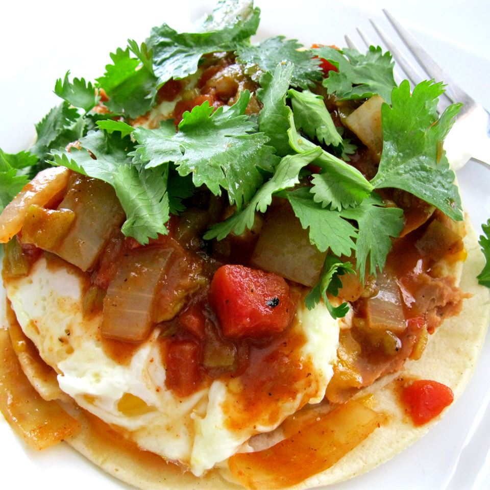

Authentic Huevos Rancheros

Description
This is an easy to make tostada-type breakfast that will definitely
satisfy your hunger until lunch.
Ingredients
- 2 tablespoons vegetable oil
- 4 (6 inch) corn tortillas
- 1 cup refried beans with green chilies
- 1 teaspoon butter
- 4 eggs
- 1 cup shredded Cheddar cheese
- 8 slices bacon, cooked and crumbled
- ½ cup salsa (Optional)
Steps
-
Heat oil in a small skillet over medium-high heat. Fry tortillas one at
a time until firm, but not crisp. Remove to paper towels to drain grease
-
Meanwhile, combine the refried beans and butter in a microwave-safe
dish. Cover, and cook in the microwave until heated through. When
tortillas are done, fry eggs over easy in the skillet. Add more oil if
the tortillas have absorbed it all
-
Place tortillas onto plates, and spread a layer of beans on them. Top
with cheese, a fried egg, crumbled bacon and if desired, salsa.
Recipes